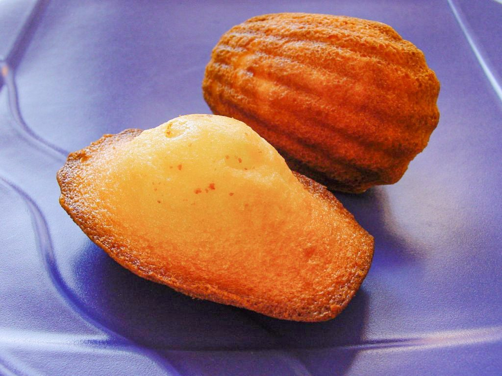

五菓
制作側の連想
「五菓」からガラスケースの五段を思い描く
店名の由来は分かりません。制作側は「五」と「菓」の字から、五段のガラスのショーケースを連想し、このページを「五つの棚」として組み立てました。制作側の連想であり、お店の理念・由来とは無関係です。また、各棚の写真はあくまでイメージで、お店が実際に扱う商品を示すものではありません。
一焼き菓子の棚



バター色の焼き菓子を並べた、イメージの棚です。
二ケーキの棚


切り口の見えるケーキを並べた、イメージの棚です。
三タルトの棚


果物のタルトを並べた、イメージの棚です。
四シューとマカロンの棚


細長いエクレアと丸いマカロンの、イメージの棚です。
五おもたせの棚


贈りものやお茶のお供を想像した、イメージの棚です。
ご案内
お店のこと(確認できたものだけ)
| 所在地 | 〒987-0511 宮城県登米市迫町佐沼大網390-1 |
|---|---|
| 電話 | なし |
| 営業時間 | 準備中 |
| 定休日 | 準備中 |
| ご予約 | 準備中 |
| 駐車場 | 準備中 |
| SNS | Instagram @itsuka0427 |